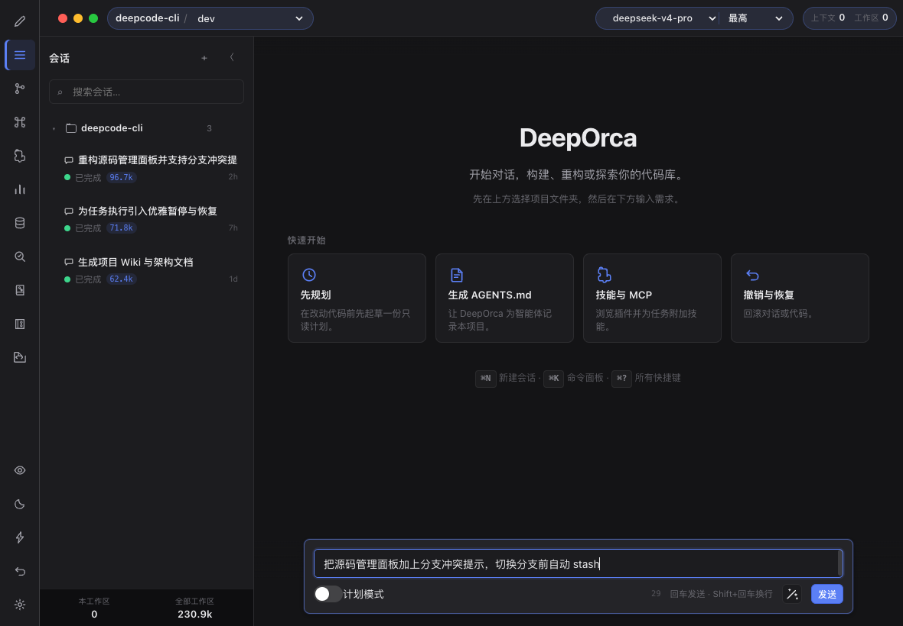
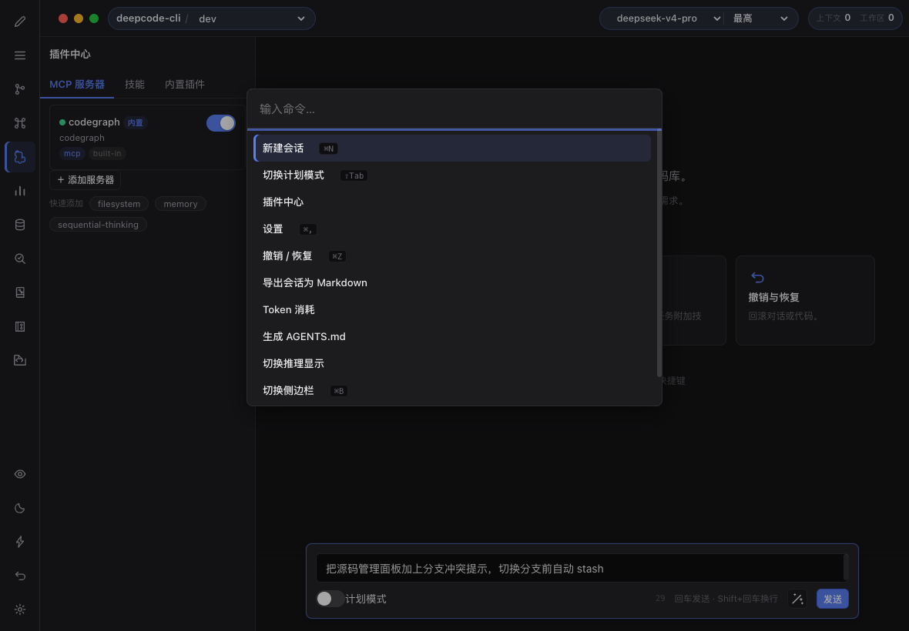

原型设计
用自然语言描述需求，AI 生成可交互原型——表单、看板、多页面导航，双向交互验证用户流程。
A2UI 协议OpenUI Lang7 个模板
deepStudio 工作区 · 完整生态 · 五个开源项目
原型 · 设计 · 编码 · 测试 —— 一套以「唯一事实源」哲学贯穿的
AI 原生创作工具族
一份 .mbt.md 是设计真相，一条追加式事件日志是测试真相，一个桌面客户端承载
从原型验证、设计稿生成到代码实现的全流程。五个项目各司其职，按需组合。
deepStudio 是 deepDesign 产品线的统一仓库群。五个项目覆盖创作、设计、查看、测试四个环节，共享同一套设计哲学，工程上各自独立。
AI 驱动的创作 Studio 桌面客户端：原型设计、UI 设计稿、智能编码三大能力独立可用、按需组合。为 deepseek-v4 优化。
d2rabbit/deepOrca →Agent 驱动的原型设计基础引擎。.mbt.md 唯一事实源，47 个 Agent 工具、双 Gate 校验、CLI/MCP/SDK/WASM 六条集成路线。
人类编辑路线的桌面客户端：多画板画布、decl 源码视图、进程内 Agent 循环，DDP 加密导出。与 Agent 共写同一份事实源。
asdshuaishuai/moonviz-demo-tauri →DDP 视觉文档的原生 macOS 只读查看器：解密 → 引擎渲染 → 交互跳转。全程只读，不写回任何文件。
asdshuaishuai/ddpView-mac →源码驱动的 API 自动化测试工作台：把被测源码变成可执行、可追溯、可复现的测试资产。与 deepStudio 哲学同源、工程独立。
设计文档 11 篇 · kernel 99 项验收测试 →原型 · 设计 · 编码 —— AI 创作 Studio。三大能力独立可用，从任意一个切入即可，也可以组合流转：从原型验证到设计稿再到代码实现，都在一个桌面客户端完成。专为 deepseek-v4 模型优化。
用自然语言描述需求，AI 生成可交互原型——表单、看板、多页面导航，双向交互验证用户流程。
生成自包含 HTML 设计稿，可脱离宿主独立交付。
.dd 格式3 种设计系统14 种 UI 风格Tailwind 内置DeepSeek 驱动的会话式编码：内置工具开箱即用，MCP 协议无限扩展。




@deeporca/core核心引擎：LLM 会话循环、8 个内置工具、Skills/MCP、Actions、会话持久化@deeporca/desktopElectron 客户端：main/preload/renderer、CodeMirror 6、多面板、6 套主题 × 亮暗双外观@deeporca/embedding本地 IBM Granite 嵌入运行时（97M，384 维，200+ 语言），构建期 vendor 零下载@deeporca/memory进程内 L0–L3 记忆流水线与 sqlite-vec 向量检索AI 时代的 Agent 驱动原型设计基础引擎。100% MoonBit，零手写 JS/Node。
.mbt.md 是唯一事实源，MoonBit 是统一计算内核——Agent 通过结构化文本协议发现组件、放置元素、检查质量、修复违规。
任意宿主后端（Canvas / Skia / OpenGL）经后端无关的 RenderPlan 显示列表接入。
| CLI 行协议 | 一个进程 = 一个有状态会话 |
| MCP | npx -y moonviz-mcp 接入任意 MCP 客户端 |
| Node SDK | moonviz-engine-sdk 会话 / 构建器 / DDP 桥 |
| WASM SDK | moonviz-engine-wasm 进程内渲染，零工具链 |
| SKILL | SKILL.md 操作规范，任意 coding agent 挂载 |
| DDP 容器 | Rust ddp_codec：加密分发 / 只读查看 |
🛰 官网与完整文档：asdshuaishuai.github.io/moonviz · 自包含二进制 CLI 1.26MB / MCP 1.10MB，仅链接系统 libc。
AI 原生原型设计工具的桌面客户端（Tauri 2）。基于 MoonViz 引擎：人类画布操作与 Agent 修改都经引擎校验（HumanGate / AgentGate）后回写同一份 .mbt.md。
画布拖拽的中间态可以带「视觉债」保存，角标提示、后续清偿——HumanGate 软门槛。
Rust 实现 Agent 循环，无 JS 运行时、无子进程桥。LLM 走任意 OpenAI 兼容端点。
DeepSeek / GLM 双平台 / Kimi 双线 / MiniMax 国内外 / StepFun，思考等级按各家方言模型感知降级。
设计文档加密分发，与 ddpView 查看器、Studio 打开回路一致。
macOS .app / .dmg 内嵌引擎二进制；Windows NSIS 由 GitHub Actions 构建。
mock-LLM × 真实引擎二进制的 cargo 端到端循环 + 前端状态机冒烟。
deepDesign DDP 视觉文档的原生 macOS 只读查看器——独立 Swift/SwiftUI 项目，与 Studio 壳和 Web 版完全解耦。
.mbt.md 明文全程只调「解密 + 渲染」，不提供任何编辑/保存能力，不写回 DDP/MBT。
DDP2 直接打开；DDP1 弹密码浮层，密码错误可重试、不落盘。
对应 Studio 的 tap: 流：点击热区跳画板，面包屑 / ← 键返回。
make-app.sh 打包出带 Dock 图标、Launchpad 与文件关联的 .app。
源码驱动的 API 自动化测试工作台。一句话：把被测服务的源码变成可执行、可追溯、可复现的测试资产。文档会过期，源码不会——从源码发现 API、提炼测试数据设计原则，由内嵌 fx Agent 合成用例。
proposed，人工裁决才 adopted，diff 留痕AST 分析（ts-morph）、HTTP 执行（undici）、数据库采样、Agent 生态全在 Node——必须内置 Node； 但 Electron 捆绑 Chromium 约 124 MB 过重，Tauri 后端是 Rust 会丢 Node 生态。结论： 把系统 WebView 直接绑进 Node 进程，体积约 55–70 MB，减半，且页面天然无 Node 权限——隔离是结构性的。
实测发现 show() 会阻塞 Node 事件循环，因此所有 IO 必须走 Worker，跨线程用 SharedArrayBuffer + Atomics 同步——方案已本机实测跑通（页面 13 次真实 HTTP 全成功）。
「真相只有一个，其余都是投影；改变真相必须过门；任何状态都必须能被重新解释。」
deepAutoTest 不依赖 deepStudio 的任何代码——两者只共享一套已被验证的设计哲学：
| 哲学 | deepStudio 的落地 | deepAutoTest 的落地 |
|---|---|---|
| 唯一事实源 | 一份 .mbt.md 是项目真相 | 被测源码是资产源头；追加式执行事件日志是结果真相 |
| 派生只做缓存 | SVG / RenderPlan / 内存 Project 不可持久化 | 结果表 / 通过率 / 趋势图都是事件日志的投影，可重建 |
| 双向提交边界相同 | 人类画布与 Agent 操作都经引擎 Gate 写回同一份 MBT | 人类编辑与 Agent 合成产出同一用例模型、写同一事件日志 |
| AI 不越权 | Agent 只能调 moonviz_op，AgentGate 更严格 | Agent 产物一律 proposed，人工裁决才 adopted |
| 一切可回放 | MBT 重新解析后画布才更新，操作可重放 | 日志可重放、判定可重算、结果可对账 |
| 只读查看器独立 | ddpView 只解密渲染，不调 Agent、不写文件 | 归档浏览器只读回放历史运行，不触发执行 |
三条产品线在同一套事实源纪律下衔接。